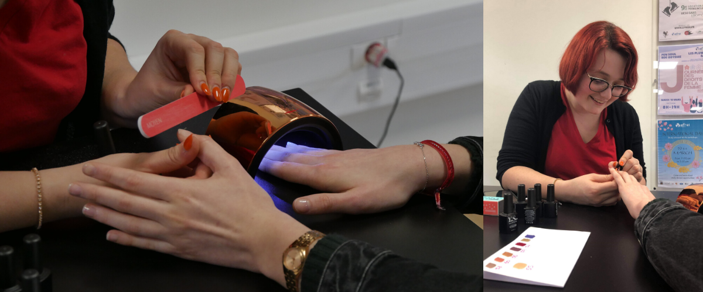

Semi permanent

What is gel polish?
Gel nails are different to acrylic nails as they are not an extension of your natural nails, instead they are a polish that can last for up to 2 weeks. Gel nail polish is applied similarly to that of a normal polish, but instead of leaving the polish to dry, it is cured under a UV light. The result is a glossy, chip free manicure! Gel nails don’t tend to damage your natural nails as much as acrylics, however they still do have some negative effects. Gel polish can be difficult to remove, and the process involves soaking your nails in acetone and buffing off the polish, which can make your nails weak and dry. We recommend that if you do like getting a regular gel mani, make sure to keep your hands and nails moisturised in between, to try and combat some of the effects.
Apply base coat
Shake the bottle thoroughly.
When applying the gel, leave a tiny gap between the base coat, the cuticle, and the skin around the nail (if you do get it on the skin, the gel will lift). So, let’s say you do get a bit of the skin or cuticles. Just before curing under the lamp, take an orange stick and tidy it up and whola! Try to avoid using cotton buds or lint-free wipes as the fibres will stick to the product and you will need to start again.
Lastly, cap the free edge.
Once you are happy with the application, cure it under the LED lamp for 60 secs or UV lamp for 120 secs (depending what your product instructions say).
Do not, I repeat, do not touch your nails after taking them out of the lamp as the product is still too tacky as to allow each product layer to stick to the next.
Apply the gel polish nail color
Apply first coat
When you apply your first layer of gel colour, shake the bottle and take your time. Try to get the first layer as perfect as possible. Make sure it’s thin and get in the corners of the side walls and cuticle area without touching the skin. It’s a bit of a challenge but it’s easier when you apply your 2nd layer.
Make sure you tidy it with an orange stick if you accidentally get the product on your skin before curing. Otherwise, it will be a nightmare to get it off. Trust me, I’ve made that mistake and the only way I could get it off my skin was to file it (don’t worry it’s not sore but it’s a mission to get it off).
Cap the free edge.
Once you’re happy with the application, place it under a lamp and cure it for 60secs on LED or 120 secs on UV.
Apply second coat
Apply a second coat of colour. Make sure you cover up the bits you have missed and remember to cap the free edge. This is the step I always seem to forget and regret in the end.
Place it under the lamp for another 60 secs on LED or 120 secs on UV.
Apply a third coat if necessary.
Apply top coat
You apply the top coat just like you applied a base coat. Just make sure you don’t miss any spots and seal the free edge!!
Once again, avoid touching the skin and cuticles. Use an orange stick to tidy it up if you do get it on the skin.
Cure it for 60secs on LED or 120 secs on UV.
If you’ve chosen a no-wipe top coat you don’t need to remove the sticky layer, but if you have a normal gel top coat you will need to remove the sticky layer with a lint-free wipe and gel cleanser.
Lastly, finish off with some Cuticle oil on all the cuticles and rub it in circular movements. This helps the blood to circulate. Oh, and don’t forget your hands! Apply some lotion or moisturizer as a finishing step.
Aftercare advices
Here’s some aftercare advice on keeping your nails and hands looking healthy and soft.
Don’t use your nails as tools.
When washing or working with cleaning products use gloves.
After washing your nails, apply moisturizer or lotion.
Apply cuticle oil twice a day.
Drink 2 litres of water every day.
Lastly, finish off with some Cuticle oil on all the cuticles and rub it in circular movements. This helps the blood to circulate. Oh, and don’t forget your hands! Apply some lotion or moisturizer as a finishing step.
| Pros | Cons |
|---|---|
|
They give a shiny, fresh look. They are more flexible than acrylic nails and therefore less likely to chip off. Drying time is much quicker than a regular manicure. There are no unpleasant fumes during application. |
They only last for up to 2-3 weeks. Exposure to UV rays can be dangerous to skin. The UV light can also cause heat spikes which cause pain to the nail bed. If badly applied, the gel can peel off. The removal process involves soaking in acetone. |